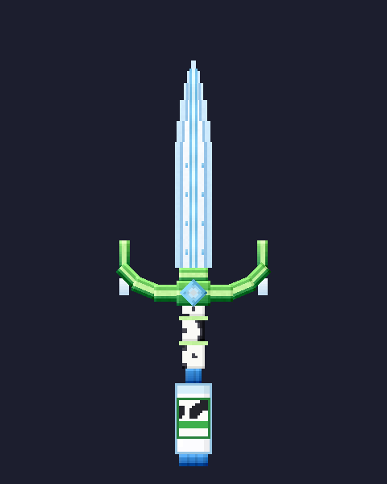
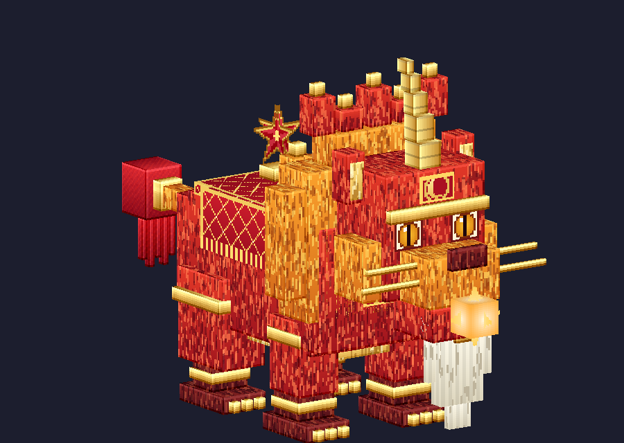

Có gì trong mod
Kiếm Trung Thu Bay
Thanh kiếm lơ lửng với tay cầm hình trăng khuyết, tua rua đỏ và đuôi hình đèn ông sao.
- Lưỡi sáng như ánh trăng, chuôi bọc lụa đỏ
- Có bộ chuyển động riêng: lơ lửng, chém, đâm, xoay

Kiếm Sữa Tươi TH
Lưỡi trắng sữa, chuôi hoa văn bò sữa, đuôi là chai sữa nắp xanh. Mang tông xanh trắng của đồng cỏ.
- Sát thương cao, độ bền lớn
- Lấy cảm hứng từ sữa tươi sạch

Boss Lân Vương Trăng Rằm
Con sư tử múa lân khổng lồ cao hơn 4 khối: bờm lửa, một sừng vàng, râu trắng và đèn ông sao trên lưng.
- Có thanh máu boss
- Rơi Bánh Trung Thu khi bị hạ
Vật phẩm
Bánh Trung ThuVật phẩm rơi từ boss.
Mảnh TrăngMảnh trăng khuyết vàng.
Cầu TrăngQuả cầu ánh trăng làm đạn.
Cách cài mod
- Cài Minecraft 1.21.1 và NeoForge cho đúng phiên bản.
- Bấm Tải mod (.jar). File nằm ở mục Releases trên GitHub.
- Cài thêm mod GeckoLib (cho hoạt ảnh của kiếm và boss) bản hợp với Minecraft của bạn.
- Chép các file .jar vào thư mục mods của Minecraft rồi chạy game.
Hỏi đáp
Thư mục mods ở đâu?
Trên Windows, bấm Win+R, gõ %appdata%\.minecraft rồi mở thư mục mods. Chưa có thì tạo mới.
Game báo thiếu mod khác?
Hãy kiểm tra đã cài GeckoLib đúng bản chưa, và NeoForge đúng phiên bản Minecraft.
Báo lỗi ở đâu?
Mở mục Issues trên trang GitHub và mô tả lỗi kèm phiên bản bạn dùng.